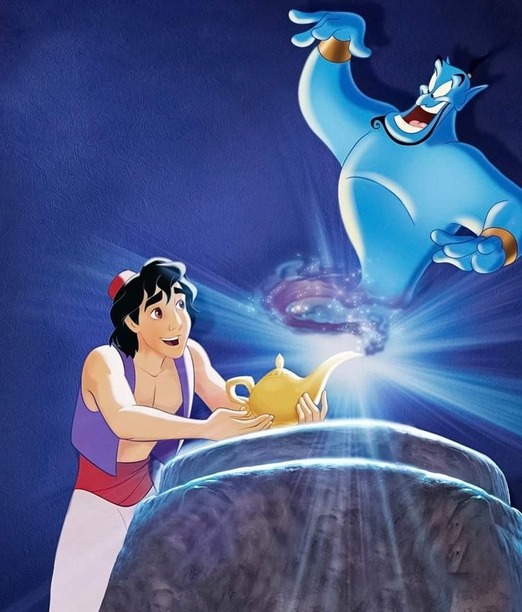

Cerita Singkat Dunia Aladdin
Aladdin adalah seorang pemuda lincah dan cerdik yang tinggal di sebuah kota padat di Timur Tengah. Ia hidup sederhana bersama ibunya dan sehari-harinya berjualan kecil-kecilan di pasar. Walaupun kehidupannya tidak mudah, Aladdin dikenal sebagai anak yang berhati baik, suka menolong, dan selalu bermimpi bisa mengubah nasibnya menjadi lebih baik.
Suatu hari, hidup Aladdin berubah total ketika ia secara tidak sengaja menemukan sebuah lampu ajaib tua di dalam gua misterius. Tanpa disangka, lampu itu berisi jin ajaib nan lucu dan sangat kuat yang bisa mengabulkan tiga permintaan! Aladdin yang awalnya bingung kemudian mulai menggunakan permintaan itu untuk mengatasi berbagai masalah.
Dengan bantuan jin, Aladdin menyamar menjadi seorang pangeran agar bisa mendekati Putri Jasmine, seorang putri kerajaan yang cantik dan cerdas. Tapi perjalanan cinta mereka tidak mudah, karena ada seorang penyihir jahat bernama Jafar yang ingin menguasai kerajaan dan merebut lampu ajaib.
Aladdin pun harus memilih antara terus menyembunyikan jati dirinya sebagai orang biasa atau jujur kepada putri dan menghadapi Jafar dengan keberanian yang sejati. Dalam petualangannya, ia belajar banyak hal tentang kejujuran, keberanian, dan arti cinta sejati.
Akhirnya, dengan kecerdikan dan hati yang tulus, Aladdin berhasil mengalahkan kejahatan, menyelamatkan kerajaan, dan mendapatkan cinta sang putri. Tapi yang terpenting, ia menyadari bahwa kebahagiaan sejati tidak datang dari kekayaan atau sihir, melainkan dari menjadi dirinya sendiri dan mempercayai kebaikan hati.
Kisah ini mengajarkan kita bahwa keberanian, ketulusan, dan harapan bisa mengubah dunia.